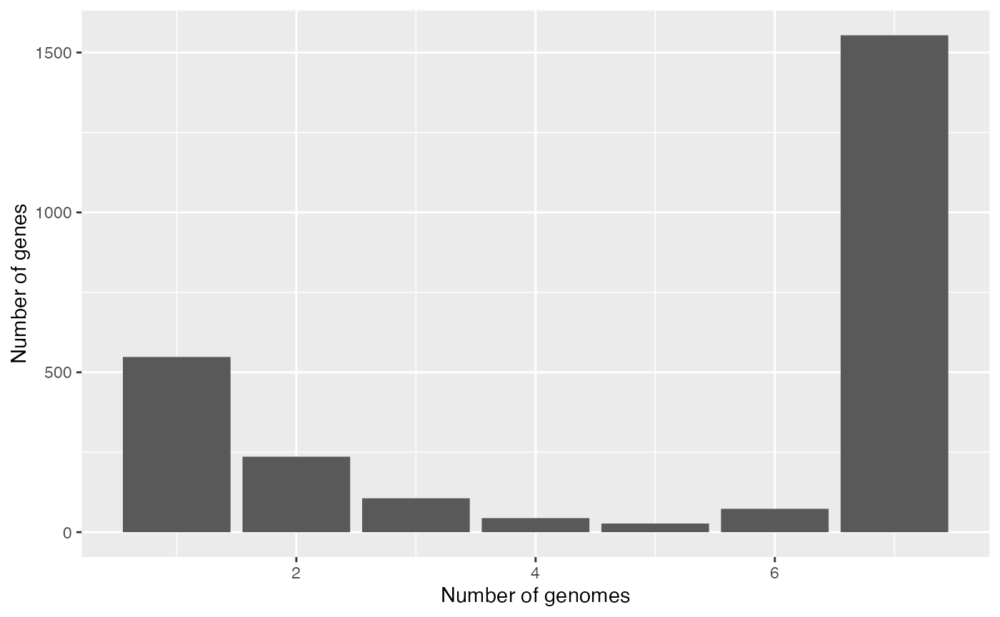

If you want a very quick look at pagoo and start playing with pangenome objects, this is a short tutorial to show the concept. Let’s start by loading a Campylobacter spp. dataset, included in the package.
library(pagoo, quietly = TRUE, warn.conflicts = FALSE) # Load package
rds <- system.file('extdata', 'campylobacter.RDS', package = 'pagoo')
campy <- load_pangenomeRDS(rds) # Load pangenomeNow that the object (campy) is loaded, we can start by querying it. pagoo was developed considering that in a pangenome each individual gene belongs to a given organism, and is assigned to a cluster of orthologous. So those variables are interconnected, but each of them can have metadata associated that is specific to each of them, i.e.: an individual gene can have coordinates inside a genome, but this doesn’t apply to a whole cluster, and a given organism has, for instance, a host where it was isolated from, but this information doesn’t apply to an individual gene.
So this 3 variables are 3 separate tables that can be queried:
campy$organisms## DataFrame with 7 rows and 8 columns
## org id strain year country host
## <factor> <character> <character> <integer> <character> <character>
## 1 16244_6_6 FR15 2008/170h 2008 France Human
## 2 16244_6_18 FR27 2012/185h 2012 France Human
## 3 17059_2_16 AR1 99/801 1999 Argentina Bovine
## 4 17059_2_23 AR8 04/875 2004 Argentina Bovine
## 5 17059_2_27 AR12 06/195 2006 Argentina Bovine
## 6 17150_1_73 CA1 001A-0374 2005 Canada Human
## 7 17059_2_42 TW6 1830 2008 Taiwan Human
## source accession
## <character> <character>
## 1 Feces ERS672247
## 2 Blood ERS672259
## 3 Prepuce ERS739235
## 4 Fetus ERS739242
## 5 VM ERS739246
## 6 Blood ERS686652
## 7 Blood ERS739261(Tip: To see all fields and methods, in any R console type campy$ and press the [TAB] key two times.)
This dataset consist in 7 Campylobacter spp genomes. For each organism, you have a row with associated metadata. The first column, org, indicates the organism.
campy$clusters## DataFrame with 2588 rows and 2 columns
## cluster Pfam_Arch
## <factor> <character>
## 1 group0001 2-Hacid_dh_C
## 2 group0002 2-Hacid_dh_C;2-Hacid..
## 3 group0003 2-Hacid_dh_C;ACT;2-H..
## 4 group0004 2Fe-2S_thioredx
## 5 group0005 4HB_MCP_1;MCPsignal
## ... ... ...
## 2584 group2584 zf-RING_7
## 2585 group2585 zf-TFIIB
## 2586 group2586 ZinT
## 2587 group2587 ZnuA
## 2588 group2588 ZT_dimerThe $clusters field returns a table with metadata associated to each group of orthologous, in this case is the Pfam architecture domain (second column).
The last, and most important field is $genes, which returns a list of DataFrame with information given for each individual gene, grouped by cluster. We let the user to inspect this field by him/herself.
campy$genesThe first 3 columns (cluster, org, and gene) are the glue that interconnects each of 3 “variables”.
Another useful field is $pan_matrix, which returns a matrix with gene abundance for each cluster (columns), and each organism (rows).
pagoo objects contain basic methods to analyze the pangenome, from general statistics to some basic plotting capabilities. Some of these methods can also take arguments.
For example:
campy$dist(method = "bray")## 16244_6_6 16244_6_18 17059_2_16 17059_2_23 17059_2_27 17150_1_73
## 16244_6_18 0.06594656
## 17059_2_16 0.12122816 0.12500000
## 17059_2_23 0.09622745 0.09632517 0.07632399
## 17059_2_27 0.09245937 0.11310008 0.10311629 0.08230990
## 17150_1_73 0.08203991 0.09034444 0.13624408 0.12275937 0.12999735
## 17059_2_42 0.08920705 0.09927089 0.14532148 0.12682137 0.13706919 0.09518600Or:
campy$gg_barplot()
One of the main advantages of using pagoo is the ability to very easily manipulate sequences. Sequences are stored as a List of DNAStringSet from Biostrings package.
campy$sequences## DNAStringSetList of length 2588
## [["group0001"]] 16244_6_6__16244_6_6_00150=ATGGCGATAACAGTTTATTACGACAAAGATTGCG...
## [["group0002"]] 16244_6_6__16244_6_6_01290=ATGAAAATAGTATGCTTAGATGCCGACACGCTTG...
## [["group0003"]] 16244_6_6__16244_6_6_01710=ATGAAAACAGTTATAGTTTGCGATGCAATACATC...
## [["group0004"]] 16244_6_6__16244_6_6_01754=ATGAAATTCGAATTTACTCATGAGCAATTATCGG...
## [["group0005"]] 16244_6_6__16244_6_6_00049=ATGTCAAATTTAACTACTAACTTAACTACCAAAA...
## [["group0006"]] 16244_6_6__16244_6_6_01069=ATGAATTATTTTGAGAATTTAAAAGTTTCAACAA...
## [["group0007"]] 16244_6_6__16244_6_6_01612=ATGCGAATTAGAATTTATTATGAAGATACCGATG...
## [["group0008"]] 16244_6_6__16244_6_6_01679=ATGATGAAAGATATGGGCGAGCCACGTATAAAAA...
## [["group0009"]] 16244_6_18__16244_6_18_01216=ATGGGGCTTACTACGAGTACGACAAAGTATAT...
## [["group0010"]] 16244_6_6__16244_6_6_00758=ATGAAAAGAGTGGTTATAAAAGTAGGCTCTCACG...
## ...
## <2578 more elements>